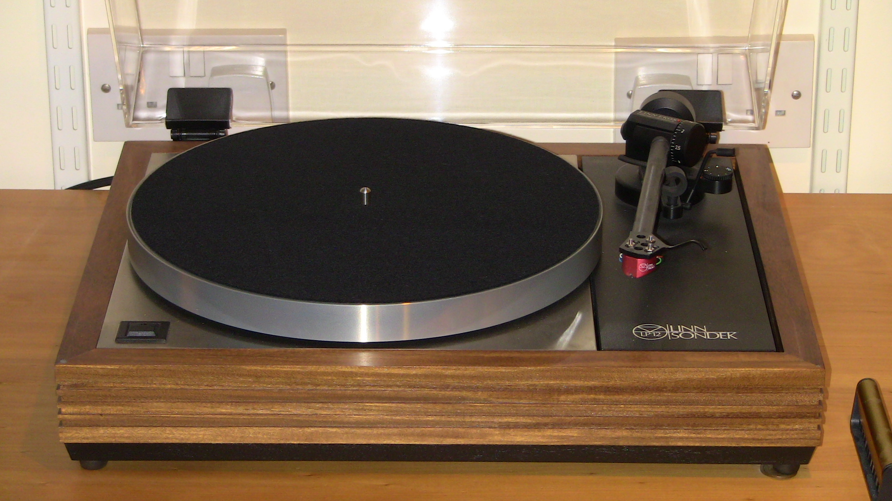
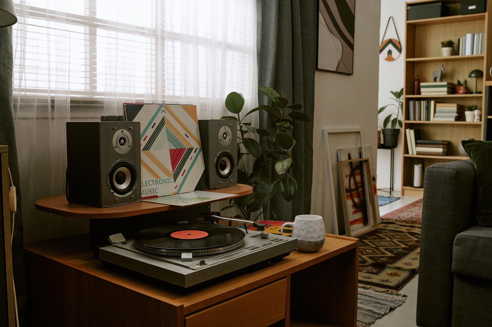
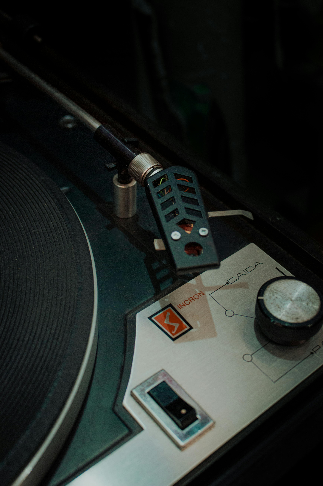
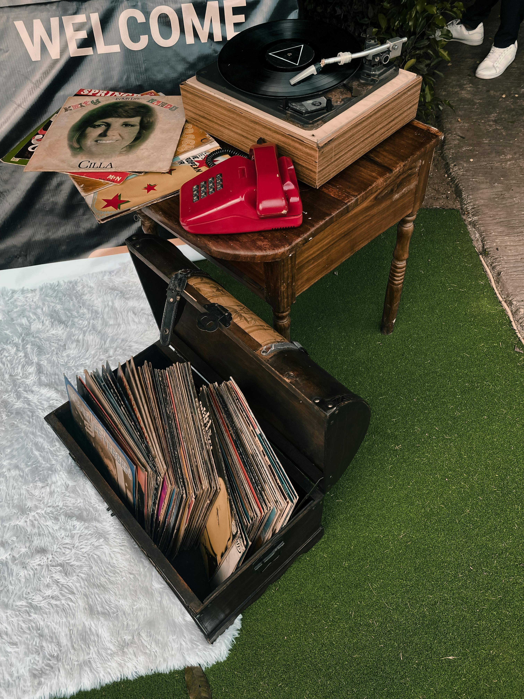
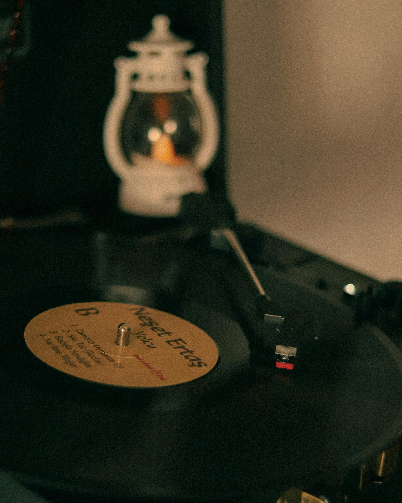

5.0
"The setup was ready when I arrived. Tracking force and anti-skate were already dialed in."
Classic Pro X buyerExplore audiophile-grade turntables, compare drive systems, and choose a setup that fits your room, record collection, and upgrade plans.
Real product-style imagery, clearer model differences, and practical setup details for buyers.
Walnut-style finish, quiet belt-drive motion, and a balanced tonearm for warm home listening.

Fast start-up, stable speed control, and a heavier chassis for frequent collectors.

Easy setup package for first-time vinyl listeners who want a clean, reliable daily player.
Real purchase-style confidence blocks make the turntable page feel less like a repeated grid.
"The setup was ready when I arrived. Tracking force and anti-skate were already dialed in."
Classic Pro X buyer"They matched the deck to my amplifier and explained which cartridge upgrade made sense."
Vintage Gold buyer"The starter kit made it simple. I left with a brush, setup notes, and records that sounded clean."
Retro Elite buyerA quiet jazz room, a daily rock collection, and a compact apartment setup all need different priorities. We help you compare noise isolation, cartridge upgrade paths, and amplifier compatibility before you buy.
Use this comparison to understand which deck fits your room and collection.
| Model | Best For | Drive | Preamp | Upgrade Path |
|---|---|---|---|---|
| Classic Pro X | Warm home listening | Belt | External | Cartridge and platter mat |
| Vintage Gold | Frequent collectors | Direct | External | Headshell, stylus, isolation feet |
| Retro Elite | First setup | Belt | Built-in option | Stylus and phono stage |
Every turntable can be prepared by our in-store team so it is ready for your first record.
We align the cartridge, check tracking force, and confirm anti-skate settings.
We verify playback speed and inspect for visible platter wobble before pickup.
Bring your amplifier model and we will recommend phono-stage and cable options.
Simple maintenance habits make a turntable last longer and protect the records you love.
Use a stylus brush from back to front after listening sessions.
A level plinth protects groove tracking and reduces unwanted skating.
Replace stretched belts when startup feels slow or pitch becomes unstable.
More grid content to help buyers understand what comes after the first deck.

Improve tracking and detail without replacing the whole turntable.

Add a quieter external preamp for better gain and warmth.

Reduce footfall vibration and speaker feedback in smaller rooms.

Use clean, short RCA runs and a proper ground connection.
Tell us your room size, amplifier, and favorite records. We will prepare two or three decks to compare in store.
Book Session